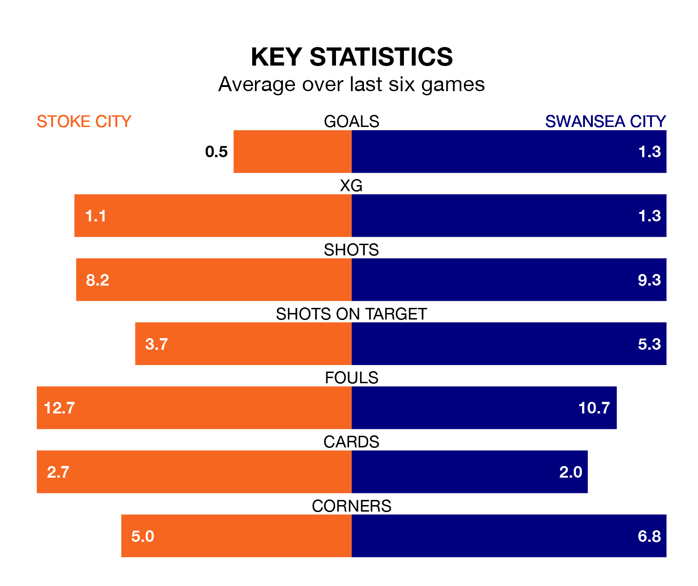

Stoke City are on a terrible run ahead of hosting Swansea City at the bet365 Stadium on Tuesday, with just two points collected from their last six games.
The Potters have picked up two draws and four losses in their last six Championship games, and face a Swans side whose last six games have brought one win and three draws.
In the last 10 years, Stoke and Swansea have played each other on 19 occasions. Stoke won 11 of them, Swansea five, and they drew three times.
On average, the Potters scored 1.6 goals and the Swans 1.2 in those matches.
Their last meeting was on February 21, when Stoke won 3-1 away.
Stoke are 20th in the table after 20 games, of which they have won six and drawn three, earning 21 points.
Swansea are four places ahead of Stoke City in 16th, with six wins and six draws putting them on 24 points.
With 19 goals in 20 games so far this season, the Potters are scoring at below the league average rate with 0.9 goals per game. And they are conceding at an average rate, letting in 28 goals at a rate of 1.4 per game.
Swansea City, meanwhile, are average scorers, with 1.4 goals per game. They have also conceded 1.4 goals per game.
In Joël Piroe, the Swans have one of the league's most on-form strikers so far this season. He has notched eight goals in 20 appearances, to sit fifth in the scoring charts.
His goal rate of one every 213 minutes is slightly quicker than that of André Vidigal, the hosts' top scorer with a goal every 216 minutes, and a total of four goals in 13 games.
Stoke's last match was on Saturday, a 1-0 loss against Sheffield Wednesday.
Swansea beat Rotherham United 2-1 last time out, also on Saturday, with Charlie Patino and Jerry Yates on the scoresheet.
Tuesday's match will be refereed by David Webb, who has taken charge of 13 Championship games so far this season, issuing one red card and booking 53 players. He has awarded one penalty.
The last Stoke game Webb refereed was a 1-0 away loss to Millwall on August 26. He is yet to oversee a match featuring Swansea this season.
